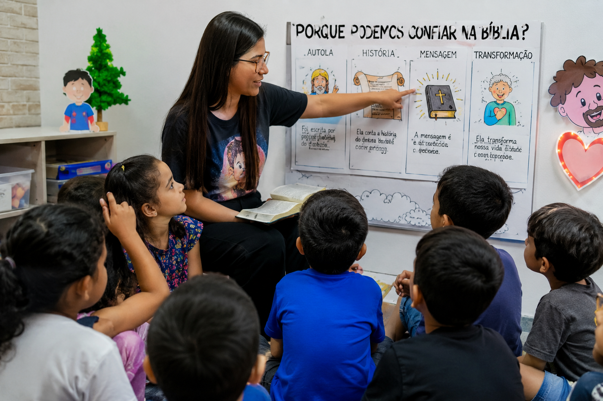

Toda professora de Escola Bíblica Dominical conhece aquele sábado. O microfone que ninguém quer segurar, os pais que entregam a criança na porta com um sorriso de alívio, e uma sala que em três minutos já virou uma roda de cochichos, cadeiras arrastadas e alguém perguntando se pode ir ao banheiro pela terceira vez. Foi exatamente essa a turma que Mariana assumiu no início do ano passado: 15 crianças entre 7 e 10 anos, "a mais elétrica da igreja", como o próprio pastor de crianças brincou ao entregar a lista de chamada.
A turma que ninguém queria pegar
"Nas primeiras semanas eu saía de lá exausta", conta Mariana. "Eu preparava a aula com carinho, imprimia desenho, levava versículo decorado, e em dez minutos já tinha perdido a turma inteira. Não era falta de amor pelas crianças. Era que eu estava competindo com o recreio, com o tablet que ficava esperando em casa, com a energia de criança que só quer se mexer."
O que incomodava Mariana não era a bagunça em si. Era perceber que, mesmo nos dias "calmos", as crianças repetiam versículos como quem decora tabuada — sem entender por que aquilo importava. "Uma menina me perguntou, do nada: 'tia, mas como é que a gente sabe que Deus existe de verdade?'. E eu não tinha uma resposta simples pra dar a uma criança de 8 anos. Aquilo me incomodou a semana inteira."
"Eu não queria mais crianças que decoram versículo. Eu queria crianças que entendem o porquê daquilo em que estão acreditando — mesmo as pequenininhas."
— Mariana, professora de EBD
O que mudou não foi a turma. Foi o método.
Foi conversando com outra professora, de uma igreja em outra cidade, que Mariana ouviu falar de uma forma diferente de conduzir os 15 primeiros minutos da aula — antes de qualquer atividade, desenho ou música. Em vez de começar contando uma história pronta, ela passou a abrir a roda com uma pergunta de criança: "por que Deus deixa coisa ruim acontecer?", "como é que a Bíblia não muda depois de tanto tempo?", "por que eu preciso ir à igreja?".
Perguntas que, normalmente, um adulto responde com "porque sim" ou muda de assunto. Mariana passou a fazer o contrário: parar ali, com calma, e construir a resposta junto com as crianças, em linguagem de criança, usando uma sequência simples que ela mesma foi organizando num caderno de capa dura que hoje já não tem mais páginas em branco.
- 1. Uma pergunta real por dia. Nunca um tema abstrato — sempre a dúvida que uma criança daquela idade realmente teria.
- 2. Uma resposta em linguagem de criança. Sem jargão teológico, sem "adultês" — com comparações do mundo delas.
- 3. Uma pergunta de volta. Para a criança repetir com as próprias palavras, não decorar as de Mariana.
- 4. Um minuto de silêncio guiado. Antes de qualquer atividade — o momento em que, segundo Mariana, "a sala inteira parece respirar junto".
Quinze minutos, quinze crianças, um silêncio diferente
Mariana não promete milagre. "Ainda tem dia que alguém derruba a cadeira", ela ri. Mas algo mudou de forma que ela não esperava: os primeiros 15 minutos da aula, que antes eram o momento mais difícil de segurar a atenção, viraram o momento mais silencioso — e mais procurado pelas próprias crianças. "Teve sábado que cheguei atrasada e encontrei duas crianças perguntando uma pra outra 'por que você acha que Deus fez o mundo assim?'. Sem eu ter pedido nada."
O reflexo apareceu também fora da igreja. Uma mãe da turma comentou que o filho, de 9 anos, começou a fazer perguntas parecidas em casa, no jantar — e que, pela primeira vez, ela própria não sabia como responder de forma simples. "Foi aí que percebi que isso não podia ficar só comigo, só no meu caderno de sábado", conta Mariana.
De um caderno de professora para as casas cristãs
Foi por isso que Mariana passou a organizar suas perguntas, respostas e pequenas dinâmicas em um material que outras professoras — e depois mães e pais — começaram a pedir emprestado. Esse mesmo formato deu origem à Coleção Descobrindo o Porquê da Fé: uma série pensada para os mesmos 15 minutos do dia a dia, seja na EBD, seja em casa, à mesa do café ou antes de dormir, ajudando a criança a entender — e não apenas repetir — aquilo em que ela crê.
Não é mais um material de decoreba de versículo. É uma forma de conduzir, com uma criança de qualquer idade, as perguntas que ela um dia vai fazer de qualquer jeito — de preferência com um adulto por perto para responder, e não sozinha, mais tarde, com uma tela.
Conheça a Coleção Descobrindo o Porquê da Fé
O mesmo formato de 15 minutos que a professora Mariana usa hoje com sua turma da EBD — organizado para você aplicar em casa, com seus filhos ou netos.
Quero conhecer a coleção Material digital · Uso em família ou em sala de EBDP.S. — Se você também já tentou de tudo pra prender a atenção das crianças na Palavra e sente que "decorar versículo" não é mais suficiente, talvez o problema nunca tenha sido a turma. Talvez seja só a pergunta com que você começa os 15 primeiros minutos.